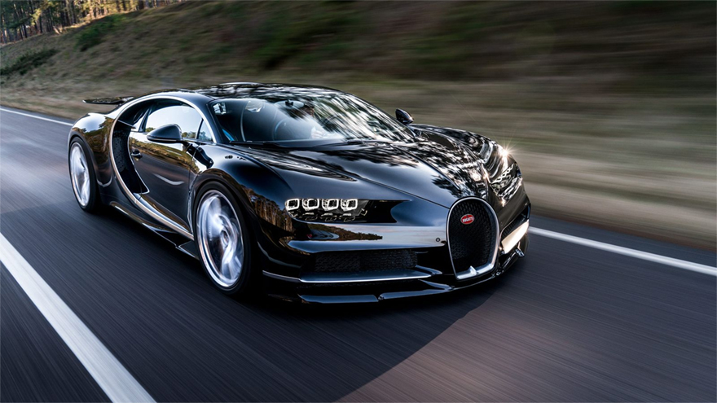

בוגאטי שירון
 הוצגה לראשונה במרץ 2016 בתערוכת המכוניות הנחשבת בז'נבה
המכונית היורשת של בוגאטי ויירון סופרט ספורט ורכב הדגל החדש של בוגאטי
1500 כ"ס
תאוצה מ0-100 : 2.5 שניות בלבד
מהירות מירבית : כ470 קמ"ש